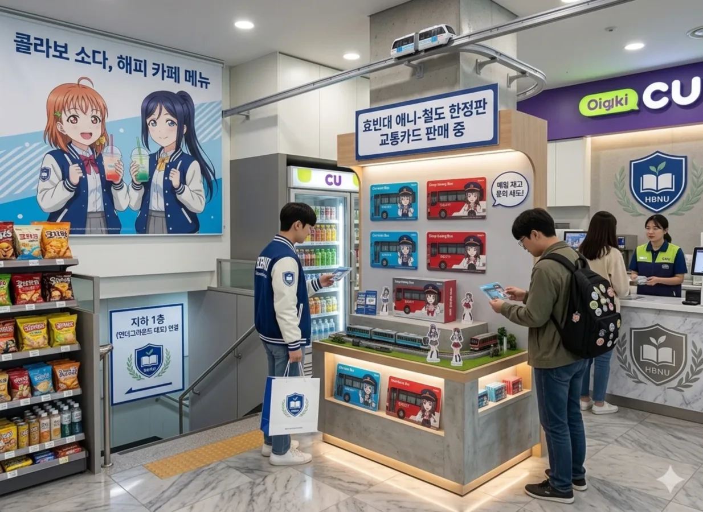
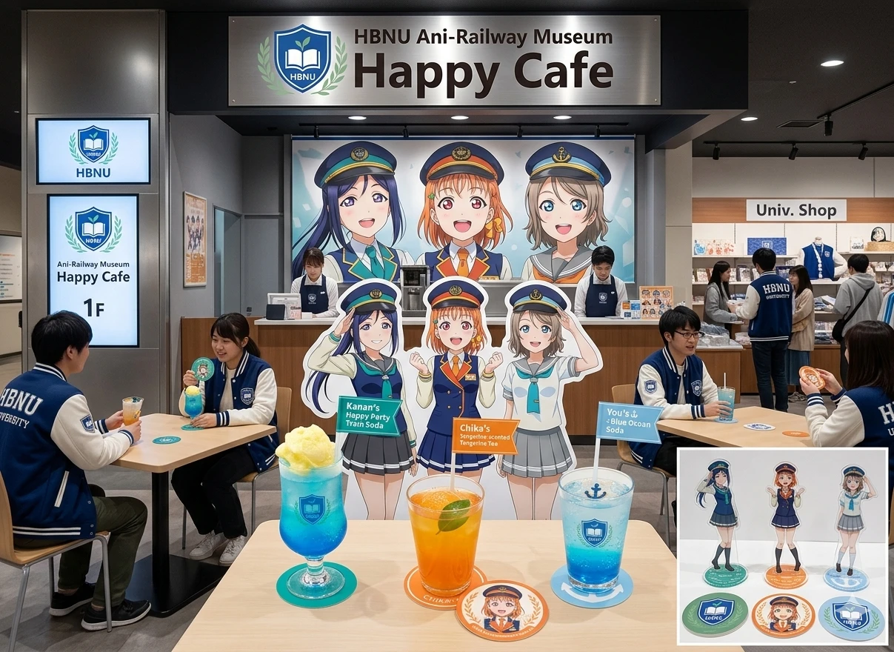
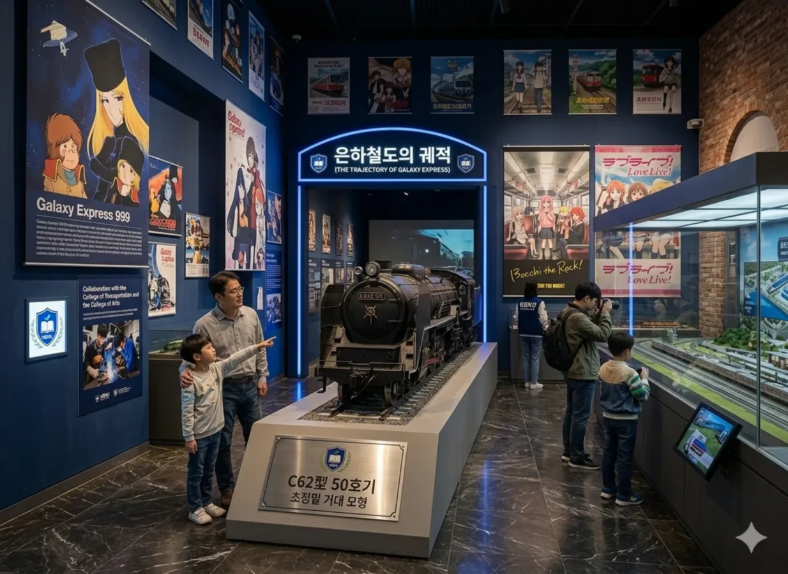

- 1. 개요
- 2. 효빈대학교 박물관 (건물 번호 22)
- 2.1. 기본 정보
- 2.2. 상설 전시: '효빈의 뿌리'
- 2.3. 목요시네마 '뮤즈(μ's)'
- 2.4. 관람 팁 및 여담
- 3. 애니-철도 박물관 (건물 번호 58)
- 3.1. 개요 및 층별 안내
- 3.2. 1층: 지갑 털이 특화 구역
- 3.3. 2층: 은하철도의 궤적 (상설 전시)
- 3.4. 진행 중인 기획 전시 (2026년)
- 3.5. 사건 사고: 더빙 체험 부스 대참사
- 3.6. 박물관 괴담 및 전설
1. 개요
"과거의 유물과 미래의 오타쿠 문화가 평화롭게 공존하는 기적의 공간."
"하나는 박물관을 빙자한 영화관이고, 다른 하나는 박물관을 빙자한 굿즈샵이다."
효빈대학교 캠퍼스 내에 위치한 박물관 시설들을 정리한 문서. 거점국립대학교답게 캠퍼스 내에 두 개의 거대한 독립 박물관 건물을 운영하고 있다. 하나는 전통적인 역사 유물과 교양 영화 상영(?)을 담당하는 효빈대학교 중앙박물관(22동)이며, 다른 하나는 박효빈 시장의 강력한 취향과 정책이 반영된 혼종의 끝판왕, 애니-철도 박물관(58동)이다.
두 곳 모두 2호선 라인에 붙어 있어 접근성이 기가 막히며, 주말이면 외부 관광객과 전국의 덕후, 철덕들이 몰려와 캠퍼스 상권을 먹여 살리는 1등 공신 역할을 톡톡히 하고 있다. 정작 재학생들은 과제할 때 빼고는 잘 안 간다는 게 함정.
2. 효빈대학교 박물관 (건물 번호 22)
캠퍼스 서구, 2호선 효빈대역 도보 3분 거리에 위치한 전통의 박물관.
2.1. 기본 정보
- 위치: 학생복지타운(4동) 바로 옆
- 주요 시설: 고고학/역사 상설 전시실, 기획 전시실, 카페, 대강당(뮤즈 홀)
- 특징: 캠퍼스 내 최고의 피서지. 한여름에 유물 구경을 핑계로 에어컨 바람을 쐬며 아이스 아메리카노를 마시는 학생들로 붐빈다. 박물관 경비 아저씨들도 학생들이 더위 피하러 온 걸 알면서도 모른 척 넘어가 주시는 훈훈한 룰이 존재한다.
2.2. 상설 전시: '효빈의 뿌리'
명색이 대학교 박물관인 만큼 2층 전체가 효빈시 일대에서 출토된 선사시대~조선시대 유물들로 꽉꽉 채워져 있다. 사실 일반 학우들에게는 존재감이 0에 수렴하지만, 인문대학의 고고학과, 사학과, 문화재보존학과 학생들에게는 과제의 무덤이자 조별 과제 집결지로 통한다.
- 침묵의 전시실: 1층 대강당(뮤즈 홀)에서 라이브 뷰잉으로 콜(응원)이 울려 퍼질 때, 2층 전시실은 쥐 죽은 듯이 고요하다. 가끔 과제에 찌든 사학과 학생이 빗살무늬 토기 앞에서 영혼을 잃고 서 있는 모습을 볼 수 있다.
본격 1층은 현대, 2층은 고대를 달리는 타임머신 건물. - 백제 금동관 모형: 입구에 전시된 거대한 금동관 모형 앞에서 사진을 찍으면 A+를 받는다는 미신 때문에 중간고사 기간만 되면 금동관 앞에 공물(주로 핫식스나 몬스터 에너지)이 바쳐진다.
2.3. 목요시네마 '뮤즈(μ's)'
"공식 명칭은 예술의 여신 'Muse'지만, 스크린에는 자꾸 9명의 스쿨 아이돌 'μ's'가 나온다."
전북대학교의 훌륭한 문화 복지 프로그램인 '목요시네마 뮤즈'를 벤치마킹하여 도입한 교내 정기 무료 영화 상영회. 원래 기획 의도는 학생들의 문화 예술적 소양을 기르기 위해 고전 명작이나 독립 영화를 상영하는 것이었다.
그러나 어느 순간부터 총학생회 문화국과 HBUS(효빈대 방송국)의 덕후들이 상영작 선정 위원회를 장악하면서, 격주로 일반 명작 영화와 애니메이션 극장판(특히 러브 라이브! 관련)이 번갈아 상영되는 기괴하고도 아름다운 전통이 생겨버렸다. 입구에 'Muse'라고 적힌 현판의 'u'자가 미묘하게 그리스 문자 'μ' 모양으로 보인다면 기분 탓이 아니다. 사회복지학대학 출신인 시장님이 리모델링 예산을 집행할 때 직접 폰트를 지정했다는 설이 지배적이다. 권력의 올바른 사용 예시
| 날짜 | 상영작 | 장르 및 테마 | 비고 및 캠퍼스 반응 |
|---|---|---|---|
| 4/2(목) | 아이 엠 샘 (I Am Sam) | 휴먼 드라마 배리어프리 |
사회복지학대학 학생들의 단체 관람 지정일. 상영 후 박물관 로비가 눈물바다로 변한다. 시·청각 장애 학생들을 위한 가치봄 버전 상영. |
| 4/9(목) | 러브 라이브! The School Idol Movie | [덕력 폭발] 애니 / 뮤지컬 |
"우리가 바로 진짜 μ's다!" 상영관이 사실상 라이브 뷰잉 회장으로 변신. 박물관장님이 "예술 영화인 줄 알았는데 왜 애들이 응원봉을 흔드냐"며 뒷목을 잡았다는 전설의 회차. |
| 4/16(목) | 바람을 일구는 소년 | 다큐멘터리 글로벌 |
아프리카의 빈곤과 극복을 다룬 명작. 아세안 다문화 교류센터 유학생들과 교환학생들이 많이 찾는다. 진지한 분위기. |
| 4/23(목) | 러브 라이브! 니지가사키 학원 스쿨 아이돌 동호회 완결편 제1장 | [덕력 폭발] 애니 극장판 |
목요시네마 예매 서버가 1분 만에 터져버린 전무후무한 사태. 상영 후 베르데 홀 빵집으로 띠부씰을 사러 가는 좀비 떼의 대이동이 벌어졌다. |
| 4/30(목) | 블라인드 사이드 | 스포츠 가족 드라마 |
멘토링 봉사를 끝내고 온 학우들이 멘티 아이들의 손을 잡고 와서 함께 팝콘을 먹으며 관람하는 훈훈한 풍경 연출. |
2.4. 관람 팁 및 여담
- 포스터 판별법: 박물관 앞 게시판에 붙는 포스터를 잘 봐야 한다. 궁서체로 'Muse'라고 적혀 있으면 얌전히 볼 수 있는 교양 영화지만, 핑크색 폰트로 'μ's'라고 적혀 있다면 그날은 박물관에 형광봉(킹블레이드)을 들고 가야 한다.
멋모르고 데이트하러 온 일반인 커플이 콜(Call) 문화에 충격을 받고 도망가는 사태가 종종 벌어진다. - 지정석의 비밀: 맨 뒷줄 정중앙 좌석은 항상 예매 불가로 비워져 있는데, 바쁜 시정 업무 중에도 가끔 모교를 찾아와 학생들 몰래 영화를 보고 가시는 박효빈 시장님의 '전용 지정석'이라는 훈훈한 도시 전설이 있다.
- 박물관장님의 한숨: 초창기엔 애니메이션 상영 날만 되면 박물관장님(사학과 노교수님)이 제발 조용히 좀 보라며 난입하셨으나, 2024년 이후로는 체념하셨는지 원장실 책상 위에 아쿠아(Aqours) 응원봉이 놓여 있는 것을 보았다는 목격담이 에브리타임에 올라왔다. (...)
- 영화가 끝나고 밤 9시쯤 밖으로 나오면 바로 앞 학생복지타운(4동) 편의점에서 컵라면으로 야식을 때우기 완벽한 동선이다.
3. 애니-철도 박물관 (건물 번호 58)

"덕질을 위해 학교를 다니는 건지, 학교를 다니기 위해 덕질을 하는 건지 헷갈리기 시작한다."
캠퍼스 서구, 2호선과 5호선 환승역인 당선역 바로 앞에 위치한 4층 규모의 박물관이다. 겉보기엔 세련된 국립대 박물관 건물이지만, 입구에서부터 미소녀 캐릭터와 역장 모자를 쓴 마스코트가 방문객을 반긴다. 주말만 되면 가족 단위 방문객, 전국의 철도 동호인, 그리고 한정판 굿즈를 노리는 오타쿠들이 뒤엉켜 엄청난 인구 밀도를 자랑한다. 본격적인 혼파망(혼돈의 파괴 망각)의 성지 되시겠다.
3.1. 개요 및 층별 안내
| 층수 | 구역명 (테마) | 주요 전시 및 입점 시설 | 비고 및 효빈위키 서술 |
|---|---|---|---|
| 4F | 루프탑 파노라마 전망대 | 하늘정원, '트램-모노레일 교차점' 포토존, 카페 야외 테라스 | 캠퍼스 위를 달리는 교내 모노레일 B선과 지상의 트램 A선이 교차하는 환상적인 뷰를 찍을 수 있는 출사 명소. 대포 카메라를 든 철덕들이 24시간 상주한다. |
| 3F | 2차원 매트릭스 (특별 기획전) |
서브컬처 기획 전시실, 애니메이션 더빙 체험 부스, 미니 라이브 스테이지 | 분기별로 인기 IP(Love Live!, BanG Dream! 등)의 기획전이 열린다. 더빙 부스에서는 밖으로 목소리가 다 새어 나가므로 엄청난 수치심을 견뎌야 한다. |
| 2F | 은하철도의 궤적 (상설 전시) |
효빈시 철도 디오라마 룸, '애니메이션 속 철도' 특별관, 실물 모형 전시실 | '은하철도 999'부터 최근 명작에 등장하는 열차들까지, 애니메이션과 철도의 역사를 교차 분석한 덕력 1000%의 전시관. |
| 1F | 게이트웨이 플라자 | 안내데스크, 유니브 샵 (굿즈샵), 공식 콜라보 카페, 물품보관소 | 지갑이 가장 위험한 층. 효빈대 과잠을 입은 캐릭터 아크릴 스탠드는 언제나 품절 상태다. |
| B1 | 언더그라운드 데포 (Depot) |
실물 철도 차량 전시(구형 전동차), 교통대 철도 운전 시뮬레이터, CU 편의점 | 교통대학에서 실제로 쓰는 모션 시뮬레이터가 설치되어 있어, 100% 리얼한 트램/모노레일 운전을 체험할 수 있다. |
3.2. 1층: 지갑 털이 특화 구역
박물관 1층은 사실상 관람객들의 지갑을 합법적으로 털어가기 위해 설계된 거대한 상업 콤플렉스다. 입구에서부터 카드가 긁히는 환청이 들린다.
- 효빈대 유니브 샵 (Univ. Shop): 평범한 대학교 기념품점이 아니다. 학교 로고가 박힌 노트나 머그컵은 구석에 처박혀 있고, 메인 매대에는
[효빈대학교 x BanG Dream!]같은 공식 콜라보 굿즈가 산더미처럼 쌓여 있다. 이곳에서 파는 굿즈는 '효빈대 총장 직인'이 찍힌 홀로그램 스티커가 붙어 있어 중고 시장에서 프리미엄이 붙는다.진정한 창조경제
※ 되팔렘 방지 규정: 인기 굿즈 출시일에는 총학생회 임원들이 직접 나와서 '효빈대 학생증'을 검사하며 1인당 구매 제한을 엄격하게 관리한다. 외부인 척박(?)을 위해 애니메이션 지식 퀴즈를 낸다는 흉흉한 소문도 있다. - 공식 콜라보 카페: 시즌별로 전시 중인 애니메이션 테마로 메뉴가 바뀐다. 캐릭터의 퍼스널 컬러를 맞춘 괴상한 색깔의 음료(예: 초록색 메론 소다에 솜사탕을 얹은 메뉴)를 팔지만, 5,000원짜리 음료를 시키면 랜덤 코스터를 주기 때문에 학우들은 군말 없이 지갑을 연다.
맛보다는 코스터가 본체다.
- 박물관 특화 CU 편의점: 1층 한구석과 지하 1층을 연결하는 구조. 여기서만 살 수 있는 '효빈대 애니-철도 한정판 교통카드'가 존재한다. 간선버스 도색이나 급행버스 도색을 배경으로 캐릭터가 그려진 카드를 사기 위해 알바생에게 매일 재고를 묻는 덕후들이 많다.
오타쿠들의 폭주를 감당해야 하는 알바생 극한 직업 1위 지점.
3.3. 2층: 은하철도의 궤적 (상설 전시)
이곳의 메인 디오라마는 단순한 장난감이 아니다. 교통대학 철도공학과와 예술대학 조소과 학생들의 피와 땀, 그리고 밤샘 야작의 혼이 섞인 졸업 작품들이 매년 업데이트되어 투입된다.
- 세대를 잇는 공간: '애니메이션 속 철도관'에는 7080 세대 아버지들의 가슴을 뛰게 하는 '은하철도 999' 특별 부스가 크게 자리 잡고 있다. 덕분에 주말이면 요즘 애니메이션을 보러 온 2000년대생 자녀와, 은하철도 999 모형을 보러 온 아버지가 서로의 덕력을 인정하며 훈훈하게 박물관을 나서는 모습을 종종 볼 수 있다.
- 새로운 랜드마크 모형 투입:

'은하철도 999'의 모델이 된 은하계 최강의 증기기관차 C62형 50호기의 1/10 초정밀 거대 모형이 중앙 홀에 거치되었다. 예술대학 조소과 학생들이 6개월간 밤을 새워 용접하고 도색한 역작이다.이걸 만들다 C학점을 맞은 조소과 학생의 눈물이 배어있다고 한다. - AR 디오라마 체험: 거대한 효빈시 철도 디오라마 위에 스마트폰을 비추면, 애니메이션 속 열차들이 실제 캠퍼스 맵 위를 달리는 AR(증강현실) 영상을 볼 수 있다. 공대 부속공장 차고지에서 이세리 니나 밈이 그려진 간선버스가 튀어나오고, 상과대학 건물 위로 빈효선광역전철이 날아다니는 충공깽의 광경을 볼 수 있다.
3.4. 진행 중인 기획 전시 (2026년 상반기)

[3F 특별 기획전] 봄바람 가득! 스쿨 아이돌 대철도시대 (Happy Party Train)
전시 기간: 2026년 3월 2일 ~ 2026년 6월 28일 (1학기 시즌)
전시 컨셉: 봄, 새로운 시작, 그리고 '꿈'을 향해 달려가는 스쿨 아이돌과 철도의 만남. '러브 라이브! 선샤인!!'의 아이코닉한 곡인 'HAPPY PARTY TRAIN'을 메인 테마로 삼아, 스쿨 아이돌 프로젝트 전반에 등장하는 철도 관련 요소들을 총망라했다.
| 구분 | 전시 부스명 | 상세 내용 및 관람 포인트 |
|---|---|---|
| Zone 1 | 출발! 해피 파티 트레인 | Aqours 멤버 9명의 등신대가 역무원 모자를 쓰고 관람객을 맞이한다. 배경음악으로는 무한 루프로 HPT가 흐른다. 입구에서 랜덤 티켓(굿즈)을 증정하는데, 최애 멤버 티켓을 얻기 위한 오타쿠들의 물물교환장이 입구 앞에 열린다. (거의 주식 거래소 수준이다.) |
| Zone 2 | 성지순례의 궤적 (이즈하코네 철도) |
실제 누마즈(성지)를 달리는 '이즈하코네 철도'의 래핑 열차 모형과 실제 멤버들의 사인이 담긴 헤드마크가 전시. 3.39km²의 효빈대 캠퍼스 평지를 래핑 트램이 달린다면 어떨까 하는 교통대 학생들의 가상 시뮬레이션 영상도 볼 수 있다. |
| Zone 3 | 토카이도 신칸센 & 아이돌의 꿈 |
도쿄(아키하바라)로 향할 때 탔던 '토카이도 신칸센'의 좌석을 그대로 재현한 포토존. 창밖 스크린으로는 애니메이션 속 배경이 휙휙 지나간다. 여기서 교복 입고 사진 찍는 게 현재 효빈대생들의 인스타 필수 코스다. |
| Zone 4 | 니지가사키 x 효빈 트램 B선 | [시장님 역설 작] 효빈대 B선 모노레일과 오다이바(니지가사키 성지) 유리카모메의 평행이론을 분석한 전시. 베르데 홀 앞 모노레일역을 배경으로 한 미아 테일러의 등신대가 위풍당당하게 서 있다. |
🥤 연계 테마 상업 시설 (Happy Cafe & 유니브 샵)
- 치카의 귤빛 귤차 (Hot/Ice): 귤잎이 동동 띄워진 오렌지 티. 주문 시 치카 역무원 코스터 증정. (박효빈 시장님 강력 추천 메뉴로, 결재 서류 도장이 찍혀있다는 농담이 있다.)
- 카난의 해피 파티 트레인 소다: 푸른색 소다 위에 레몬 솜사탕이 구름처럼 올라간 인스타 감성용 음료. 마시다 보면 솜사탕이 녹아서 색깔이 좀 흉악해지는 단점이 있다.
- 요하네의 타락천사 흑당 밀크티:
"먹어라, 나의 리틀 데몬들이여!"라는 수치스러운 멘트를 외치고 주문하면 500원 할인된다는 괴담이 있었으나 다행히 사실무근으로 밝혀짐. 하지만 진짜로 외치는 용자들이 가끔 있다. - N게이지 모형 굿즈: 효빈대 트램-모노레일 B선 해피 트레인 래핑 N게이지 모형이 25만 원이라는 사악한 가격에도 불구하고 철덕+애니덕 연합군의 화력에 의해 매진 임박 상태다.
3.5. 사건 사고: 3층 더빙 체험 부스 대참사
3층에 위치한 '애니메이션 더빙 체험 부스'는 본래 두꺼운 방음 부스 안에서 화면을 보며 유명 애니메이션의 명대사를 직접 더빙해 보는 건전한(?) 체험 시설이다.
그러나 2026년 1학기 초, 부스의 외부 스피커 송출 버튼이 실수로 눌린 채 고장 나면서, 안에서 헤드셋을 끼고 있던 한 기계공업대학 복학생이 "니코니코니~!!"를 혼신의 힘을 다해 열창하는 목소리가 3층 전체 전시실에 서라운드 풀 사운드로 울려 퍼진 대참사가 발생했다. (...) 당시 현장에 있던 관람객들은 웃음을 참지 못해 바닥을 굴렀고, 해당 학생은 쥐구멍을 찾았다는 후문.
이후 이 부스는 학우들 사이에서 '수치심 테스트의 방'으로 불리며, 신입생 환영회나 동아리 MT 벌칙 장소로 널리 애용되고 있다. 최근엔 누군가 여기서 뱅드림 노래를 부르다가 마이크를 박살 냈다는 카더라까지 돌고 있다.
3.6. 박물관 괴담 및 전설
역사가 깊고 오타쿠의 한(?)이 서린 곳이다 보니 온갖 괴담이 넘쳐난다. 물론 대부분 뻥이다.
- 한밤중의 유령 트램: 지하 1층 데포(Depot)에 있는 교통대학 시뮬레이터가 새벽 2시만 되면 아무도 없는데 스스로 전원이 켜지고 "다음 역은... 당선... 당선역입니다..."라는 안내방송이 흘러나온다는 괴담. 사실은 관리자가 퇴근할 때 업데이트 매크로를 돌려놓고 가서 나는 소리라고 한다.
- 시뮬레이터의 저주: 지하 1층 트램 시뮬레이터는 너무 사실적인 물리 엔진을 적용한 나머지, 여기서 '이니셜 D'를 찍겠다며 트램으로 무리하게 드리프트를 시도한 새내기가 멀미를 버티지 못하고 토를 한 사건이 있었다. 이후 "드리프트 시도 적발 시 영구 출입 금지"라는 살벌한 경고문이 붙어 있다.
- 옥상의 오타쿠 정모: 4층 루프탑 정원 구석 벤치에 밤 10시 이후에 혼자 앉아 있으면, 어디선가 모르는 사람이 다가와 "최애가 누구냐"고 물어본다고 한다. 대답을 못하면 밤새도록 애니메이션 영업을 당한다는 무시무시한 괴담이다.
괴담이 아니라 진짜 실존하는 고인물 철덕/애니덕 아저씨라는 게 학계의 정설.